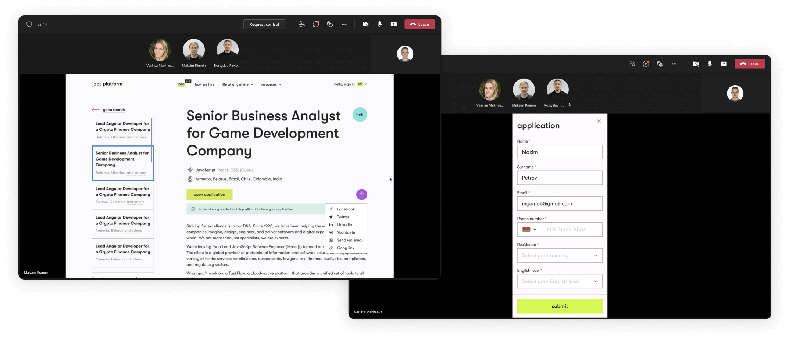

UX-исследование ребрендинга
Задача
Исследовать ключевой юзер-флоу после ребрендинга, получить информацию от пользователей
по новому стилю.
Челленджи:
- Проверить, не повлечет ли ребрендинг за собой ухудшение юзабилити.
- Собрать фидбек респондентов по новому стилю.
- Проверить как десктопную, так и мобильную версии.
Аудитория:
В качестве респондентов мы пригласили участников проекта, недавно присоединившихся к команде, а так же сотрудников компании, не относящихся к проекту. Это попадание в ЦА, т.к. сновная аудитория сайта — айти-специалисты в поиске работы. Мы старались подобрать для исследования людей из разных сфер — DEV, BA, QA и т.д. Так же использование внутренних ресурсов позволило провести исследование в короткие сроки.
Проведение модерируемого исследования:
Сначала мы провели модерируемое исследование и попросили выполнить ключевое действие
в одном из сценариев. Исследование проводилось дистанционно, с демонстрацией экрана
респондентами. Мы собрали интерактивные прототипы в 2-х версиях — десктопной
и мобильной. Исследования проводились по каждой версии отдельно.
Задача звучала как «Попробуй подобрать для себя вакансию
и откликнуться на неё» . В процессе мы просили комментировать
действия мысли и впечатления, а так же возникающие сомнения и боли. Так же
мы задавали дополнительные вопросы в процессе и конце встречи.
Помимо юзабилити-тестирования, мы также спрашивали респондентов о новом дизайне.
В результате мы собрали дополнительные отзывы по ребрендингу, часть которых позже
легла в основу некоторых правок.

На каждом сеансе тестирования присутствовало два дизайнера. Один общался с респондентом,
второй записывал инсайты. Таким образом, мы экономили время на расшифровке записи встречи.
Анализ результатов
Мы провели 10 сеансов тестирования. Собранные инсайты были разделены на группы.
Мы выяснили, что ребрендинг не повлиял негативно на пользовательский опыт. Все
респонденты успешно дошли до конца сценария. Кроме того, мы получили еще несколько
инсайтов по улучшению юзабилити, которые оставили для дальнейшего изучения.
Так же по ходу наблюдений мы дорабатывали прототип, по мере того, как
пользователи с ним взаимодействуют. Это помогло собрать качественный и полный прототип для
дальнейшего количественного исследования.
Проведение количественного исследования
После качественного исследования мы провели количественное исследование, чтобы проверить
выводы на большей выборке респондентов. Для этого мы загрузили в Maze интерактивный
прототип. Мы нашли респондентов для этого этапа, используя список рассылки по электронной
почте.
Все выводы, полученные в ходе качественного исследования, подтвердились.